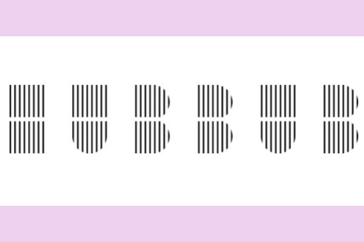
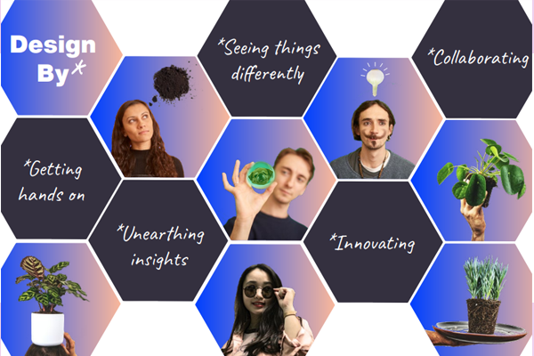
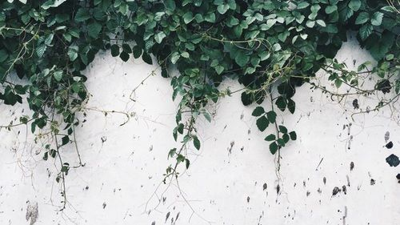

<!DOCTYPE html>
<html>
<head>
  <link rel="stylesheet" href="style.css">
  <title>About</title>
  <link rel="icon" type="image/x-icon" href="images/favicon.ico">
</head>
<body>

<ul>
    <li><a href="index.html">Home</a></li>
    <li><a target="_blank" href="https://www.hubbub.org.uk/Pages/News/">News</a></li>
    <li><a class="active" href="about.html">About</a></li>
    <li><a href="gallery.html">Gallery</a></li>
  
</ul>

<div class="grid-container">
  <div class="header" style="background-color:rgb(176, 130, 209);"> 
    <h2>About Us</h2>
    <p>Welcome to the About Us page</p>
<p>Here you can learn about Hubbub, our website sponsor</p>
  </div>
  
  <div class="left" style="background-color: pink;">
<p><b><em>About Hubbub</em></b></p>
 <p>We are an environmental charity with a difference. Our purpose is to inspire 
    ways of living that are good for the environment. We do this by designing 
    campaigns that make environmental actions desirable. We disrupt the status 
    quo to raise awareness, nudge behaviours and shape systems. We do this with 
    knowledge and playfulness, and we won’t make you feel bad. 
    Design By Nature, brought to you by Hubbub, is an initiative that challenges 
    students to find new ways to tackle environmental issues affecting our day-today lives. We celebrate innovation, creativity, disruptive thinking, collaboration 
    and insight-led ideas that make sustainable living second nature.</p>


</div>

  <div class="middle" style="background-color: pink;">
<p><b><em> Bringing the outside in! </em></b></p>
 <p>"Spending time in nature is proven to have 
    multiple positive health and wellbeing benefits 
    for individuals and provides multiple social and 
    economic benefits 
    to communities, including bringing them closer 
    together" (Public Health England, 2020). 
    But in the most deprived areas of England, 
    people have significantly less green space than 
    wealthier areas, especially for those living in 
    urban environments. Living in busy cities can 
    keep people away from natural spaces, creating 
    a sense of detachment from nature. 
    However, there isn’t necessarily a need for a 
    park or a forest to strengthen our connection to 
    nature. This can also happen inside our own 
    home, and whether it’s a plant in our living room 
    or bee box on our windowsill, these simple 
    things can do wonders for our mental health, 
    and foster a greater appreciation for the natural 
    world.</p>
</div>

  <div class="right" style="background-color: pink;">
 <p><b><em>Why did I make this website.</em></b></p>
 <p>I've created this website with the purpose of informing others about plants!</p>
 <p>Our aim is to bring plants to everyone's homes regardless of their background as everyone should have the equal opportunity to participate in the environment and our auidence are young people aged 18-25.</p>
<p>We ar especially putting in the effort to target houses that require financial assistance from the government.</p>


</div>

}